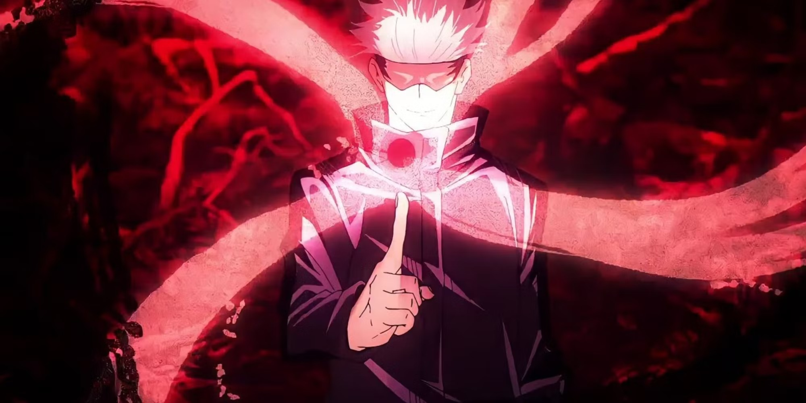
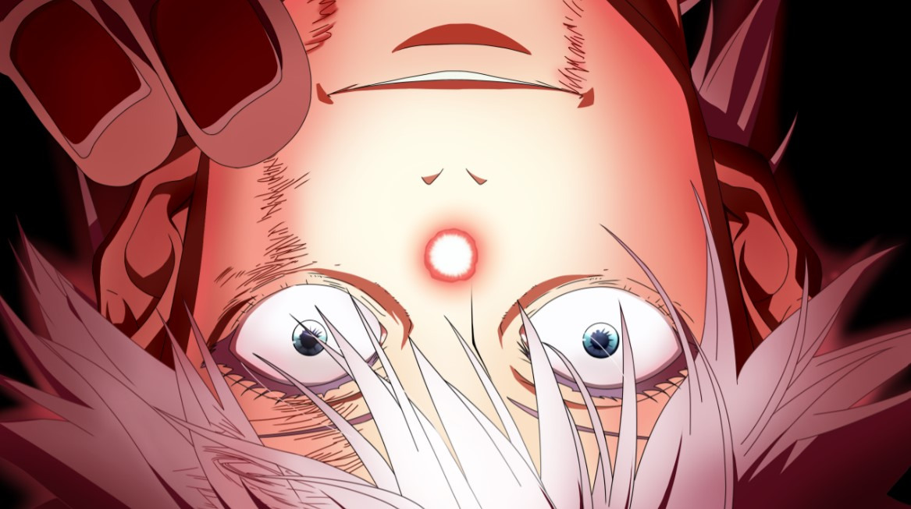
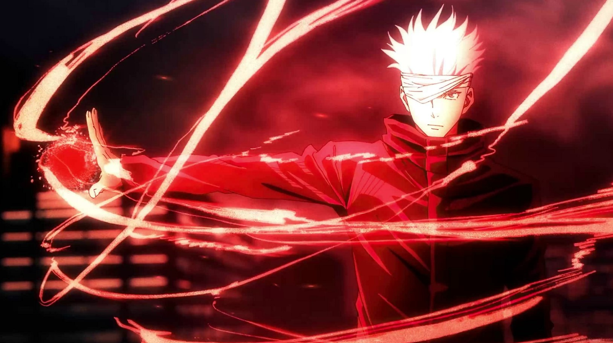
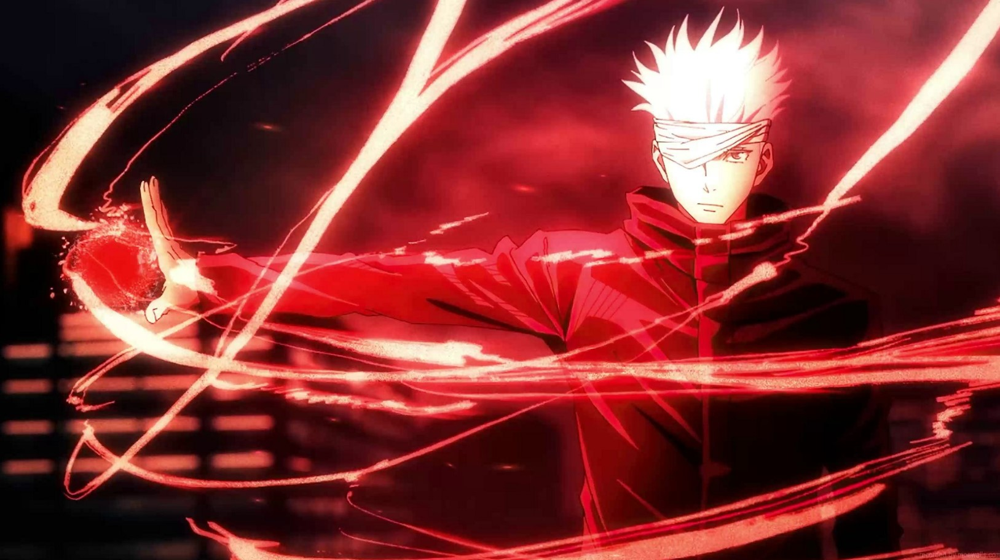

O Vermelho inverte o Limitless através do conceito de divergência, gerando o poder de repelir. Essa técnica pode ser usada para liberar uma imensa força explosiva em um instante. A produção de energia do Vermelho é pelo menos o dobro da produção do Azul. Ao usar a energia amaldiçoada reversa, Satoru pode usar o Limitless para repelir em vez de atrair. É o oposto do Azul.
Satoru Gojo, o Feiticeiro Jujutsu mais Forte


 
